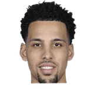

“It’s the Pistons — I feel for the organization, for the fans there.… I spent my whole career there. And so it’s tough to watch the guys go through that. And I’m close with a lot of people there. With Monty (Williams) and Troy (Weaver) and Arn Tellem and (Tom) Gores and all those guys. It’s tough to watch. I hope they can end the slide sometime soon.”
, Public domain, via Wikimedia Commons")
What Joe Dumars has said about other NBA players and coaches
23 quotes from Joe Dumars about 18 other people around the NBA, newest first. Each one links to its original source.
Best quotes
Joe Dumars' statement on the Jamahl Mosley hire:
“Jamahl has earned tremendous respect across the NBA for his leadership, professionalism, and the strong relationships he develops with players and staff. He has consistently demonstrated an ability to develop young talent while establishing teams that compete with toughness, discipline, and togetherness. His teams reflect his coaching style through their defensive intensity, effort, preparation, and commitment to playing the right way. Those qualities reinforce the long-term stability of a winning culture.”
Pelicans executive vice president of basketball operations Joe Dumars said in a statement.
“I have the utmost respect for Willie Green, and I'm sincerely appreciative of his contributions to the Pelicans organization and the New Orleans community. We wish him and his family all the best in the future.”
What NBA players and coaches have said about Joe Dumars →
Quotes per season
Joe Dumars talks most about
- Joe Dumars on Willie Green3 quotes
- Joe Dumars on Jamahl Mosley2 quotes
 Joe Dumars on Jeremiah Fears2 quotes
Joe Dumars on Jeremiah Fears2 quotes Joe Dumars on Rasheed Wallace2 quotes
Joe Dumars on Rasheed Wallace2 quotes Joe Dumars on Tayshaun Prince2 quotes
Joe Dumars on Tayshaun Prince2 quotes- Arn Tellem1 quote

Austin Daye1 quote Brandon Jennings1 quote
Brandon Jennings1 quote Domantas Sabonis1 quote
Domantas Sabonis1 quote- Gayle Benson1 quote
- Herb Jones1 quote
- Isiah Thomas1 quote
2025-26
6 quotesWill Guillory:Joe Dumars on Jamahl Mosley:
“Jamahl was the person who aligned with us and our vision more than anyone else.”
Joe Dumars' statement on the Jamahl Mosley hire:
“Jamahl has earned tremendous respect across the NBA for his leadership, professionalism, and the strong relationships he develops with players and staff. He has consistently demonstrated an ability to develop young talent while establishing teams that compete with toughness, discipline, and togetherness. His teams reflect his coaching style through their defensive intensity, effort, preparation, and commitment to playing the right way. Those qualities reinforce the long-term stability of a winning culture.”
“I was laughing this morning, like, I didn't know if I could fit with Isiah (Thomas) or not, but I knew we both had great IQs and we'd figure it out,”
Pelicans executive vice president of basketball operations Joe Dumars said in a statement.
“I have the utmost respect for Willie Green, and I'm sincerely appreciative of his contributions to the Pelicans organization and the New Orleans community. We wish him and his family all the best in the future.”
JimEichenhofer: Joe Dumars on 7th pick Jeremiah Fears' work ethic:
“We had to stop him coming in to the gym for awhile, because his legs were getting so sore.(I told him) I know you're 18, but you've got to rest. He's working out super hard in the morning, then he's coming back at night.”
Joe Dumars on Herb Jones:
“Herb Jones exemplifies all the great qualities our team values with his toughness, competitiveness, and commitment to getting better every day. We could not be more excited to sign Herb to this contract extension and keep him in New Orleans for many years to come.”
2024-25
6 quotesDumars on Jeremiah Fears' off-the-dribble and attacking offensive game:
“I like his skill set, his ability to get anywhere on the court at any time... You have to have guys who can compromise the other team's defense.”
“I wasn't here. All I can do is move forward and guide and create and lead and put expectations on what we need to do here to be successful. And only then can I judge Willie or anyone else. I was pleased with what I heard. I'm looking forward to going forward and working with Willie and to push us to success. You've got to set the bar. And that's what we're going to do.”
Dumars spent much of his first few weeks on the job talking to people in the building to help with his assessment of the Pelicans' coaching staff and players.
“It's hard for me to come in here and say 'here's how I assessed Willie (Green) last year,'”
Joe Dumars:
“I read that last week (that I was given a mandate to trade Zion Williamson). If I did, nobody told me.”
“First and foremost, I want to thank Mrs. Benson for giving me the honor and privilege to lead the Pelicans basketball operations group,”
Joe Dumars:
“The day of the trade for Rasheed Wallace. I felt we had a great shot to win.”
2023-24
1 quote“It’s the Pistons — I feel for the organization, for the fans there.… I spent my whole career there. And so it’s tough to watch the guys go through that. And I’m close with a lot of people there. With Monty (Williams) and Troy (Weaver) and Arn Tellem and (Tom) Gores and all those guys. It’s tough to watch. I hope they can end the slide sometime soon.”
2022-23
2 quotes“It wasn't like (Sabonis) didn't get off without any punishment, but we didn't think that rose to the level of excessive and over-the-top, conduct detrimental and repeat offender. That's why you separate those two and deal with one act on the court -- and then another act.”
Dumars told Yahoo Sports recently.
“As soon as I retired from playing at 36 (in 1999), this probably wasn't the move for me. I had to live and get more experience. “Once I started talking to Adam (Silver, NBA commissioner) and Mark Tatum (deputy commissioner), just over a period of time, it became very clear that this was like a seamless transition for me. So I'm super happy with the decision to do so. Everything I've done up until this point, led me to this particular move right here.”
2013-14
3 quotes“I’ve had the pleasure of working with some great people throughout the last 29 years as both a player and executive, and I’m proud of our accomplishments. Tom Gores and ownership is committed to winning and they will continue to move the franchise forward.”
Vincent Goodwill:Dumars on his previous denials on Jennings:
“We started talking last Friday. John asked 'do you have any interest in BJ' I said,”
Dave Pemberton:Dumars on hiring Rasheed:
“Bright, articulate, intelligent guy. That’s what we went out and hired him for. To bring that to the young bigs.”
2012-13
3 quotesJoe Dumars, president of basketball operations, said he welcomes Jackson’s input.
“Tom and I discussed using a consultant as part of our decision-making process in our search for a head coach and we feel that Phil Jackson is a great resource to use,”
Vincent Goodwill:Dumars:
“We also appreciate everything that Austin Daye has done for our team both on and off the court over the past three-plus years.”
Vincent Goodwill:Dumars:
“We want to thank Tayshaun for his professionalism and contributions over the last 10 years.”
2011-12
1 quoteDumars said Wednesday night on 971 The Ticket.
“Stuckey is 24 or 25 (he's 25). He's a young guy and part of the rebuilding process. Tayshaun Prince, when you look at rebuilding, there is always going to be one veteran you have going forward with young guys.”
2010-11
1 quoteChris Iott:Joe Dumars on Richard Hamilton:
“Rip and I had a great conversation. He's the last guy that I need to worry about competing.”